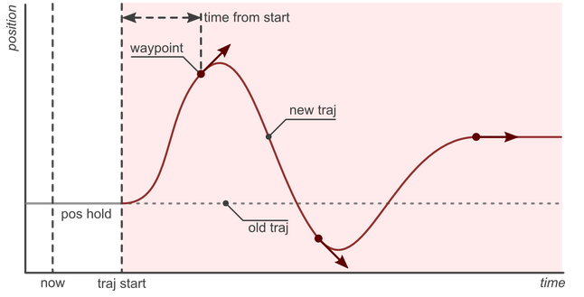
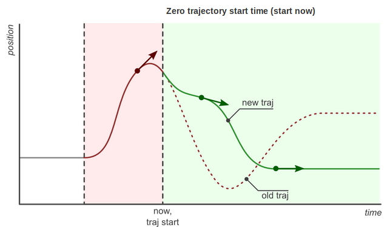
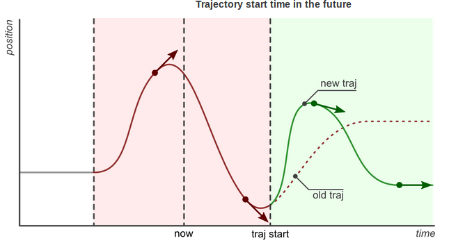
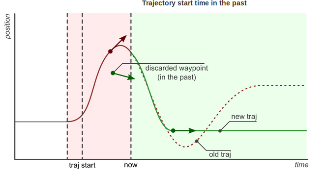

Understanding Trajectory Replacement
軌道の切り替えについての理解
joint trajectory controllerで説明したとおり 新しい軌道コマンドの到着は必ずしもコントローラが完全に現在実行中の軌道を捨て去り， そして新しい軌道を実行し始めることを意味しません． むしろ，コントローラは両方の軌道で利用できそうな部分を抜き取り，そして適切に組み合わせます. これにより，よりスマートな軌道置換行います．
以下がコントローラが行う軌道置換のステップです．
-
- 新しい軌道の中から使えそうな部分を得る．
-
未来に到達すべき全ての経由点を保存し，過去に到達すべきだったものを破棄します． 有用な部分がない場合（つまり，すべての経由点が過去にある場合），新しい軌道は 拒否され，現在の軌道は変更されずに実行を続けます．
-
- 現在の軌道の中から使えそうな部分を得る．
-
新しい軌道の開始時刻まで現在の軌道を保存し，それより後の部分の軌道は捨てます．
-
- 使えそうな部分を組み合わせます．
-
現在の軌道と新しい軌道の使えそうな部分を組み合わせます．
下記の例はこの振る舞いを詳細に説明しています．
1. 基本
この例は，現在，ジョイントが位置保存モード(下の図ではpos holdと書かれた平らな灰色の直線) にある場合を仮定します． 新しい軌道(赤で示されています）が今(now)，到着しました．その軌跡は３つの経由点と 未来の開始時刻(traj start)で構成されています． この経由点に到達すべき時刻( trajectory_msgs/JointTrajectoryPoint の中のtime_from_startメンバによって指定 )は軌道の開始時刻から相対的に計算されたものです．
コントローラは開始時刻(traj start)で現在の軌道を繋ぎ合わせを行います． そして，３つの経由点を追加します． 現在(now)と開始時刻(traj start)までの間では以前の位置が維持されていることに 気をつけてください．この時点では，新しい軌道は，まだ開始されません． 最後の経由点に到達した後，その位置は新しいコマンドが到着するまで保持されます．
コントローラは現在と新しい軌道の間の推移がスムーズであることを保証します． これは，最初の経由点に到達するまでの時間がより長い場合は，推移がゆっくりになることを意味します．

2. 軌道開始時刻の効果
この例では，同じ軌道を異なる開始時刻(start time)でコントローラに送った場合の効果について 説明しています．状況としては，コントローラは上述の例の軌道(赤のライン)を実行中に， 新しいコマンド(緑のライン)を受け取ったところです．ただ，そのコマンドの開始時刻は それぞれ，０(start now)，未来の時刻，過去の時刻となっています．
最後の図(Trajectory start time in the past)において， 最も興味深いことは，新しい軌道の開始時刻と最初の経由点の到達時刻は すでに過ぎ去ってしまっているということです． この場合，最初の経由点は捨てられ，２つ目の経由点のみが実行されます．


